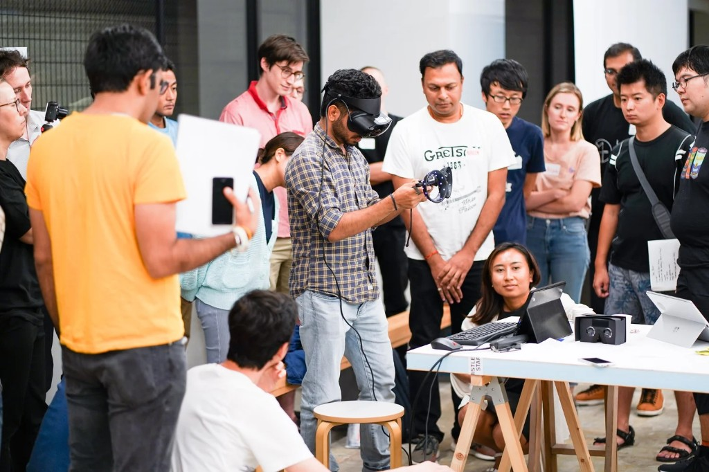
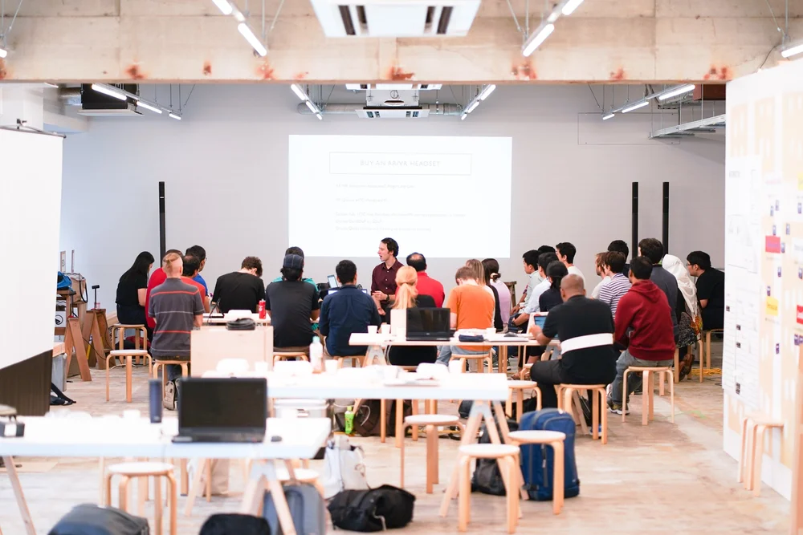
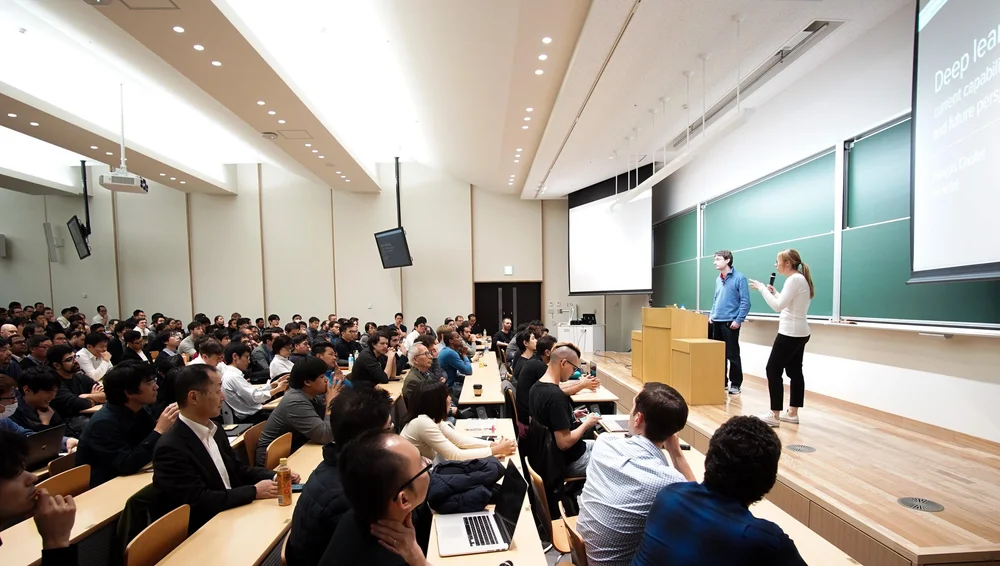

Learn, build, and ship AI together.
MLT is a global AI community and former award-winning nonprofit founded in Tokyo. Rooted in open education, open source, and open science, we bring together engineers, researchers, and domain experts from around the world to collaborate, share knowledge, and advance the field of AI.



The community
Since 2017, Machine Learning Tokyo has grown from a local study group into one of the world's most active technical AI communities. We organize talks, workshops, hackathons, and paper reading sessions, both online and in person.
Whether you're building your first LLM application, contributing to open-source AI, or publishing research at NeurIPS, there's a place for you here. Our events have welcomed more than 30,000 participants from around the world, while our GitHub organization develops open-source tools, educational curricula, and research. Everyone is welcome to learn, contribute, and lead.
What we stand for
Learn by doing
Free workshops, study sessions, and curated lecture series from Stanford, MIT, Berkeley, and beyond, translated, annotated, and run live with the community.
- Dive into Deep Learning study groups
- MLT __init__ paper reading sessions
- Math for ML workshops
Build in public
Volunteer teams ship real projects on our GitHub org, from ML Search to Edge AI labs, annotation tools, and AI-for-social-good applications.
- 50+ public repositories
- Community-led from idea to product
- Apache 2.0 & MIT licensed
Research together
Community-led research, annotated paper collections, and collaborative experiments, bridging academia and industry without gatekeeping.
- Published research at top conference workshops
- Cross-border collaboration since 2017
- Former Nonprofit 一般社団法人 · award-winning
Timeline
Nine years of community, research, and open source, from a study group in Tokyo to a global nonprofit presenting at NeurIPS, CHI, and beyond.
Community started in Tokyo, Japan: study sessions, talks, and workshops for machine learning practitioners.
Presented Multimedia Art: The Synthesis of Machine-generated Poetry and Virtual Landscapes at Art Machines: International Symposium on Computational Media Art.
Registered as a nonprofit organization in Japan (一般社団法人).
Won the Rakuten Technology & Innovation Awards for community impact in AI education and open source.
Presented Creative GANs for generating poems, lyrics, and metaphors at the 33rd Conference on Neural Information Processing Systems.
Presented Quantized deep learning models on low-power edge devices for robotic systems.
Moved from in-person to online sessions, reaching members across time zones while keeping the community connected.
Launched Edge AI Lab, bringing machine learning to microcontrollers and low-power edge devices.
Presented Creative immersive AI: emerging challenges and opportunities for creative applications of AI in immersive media.
Shipped ML Search, a search engine and knowledge platform for machine learning resources.
Contributions to the BLOOM large language model and the ROOTS corpus, community-led open science at scale.
Launched MLT & AI Communities chapter in New York, expanding the global network beyond Tokyo.
Launched Open Evals, open evaluation tooling for the AI community.
Join the community.
No application, no fee. Show up to an event, hop in Discord, or start contributing on GitHub. Tokyo is where our roots are, our community is everywhere.
Attend a session
Workshops, talks, and study sessions on Luma. Online and in Tokyo. Bring your laptop.
Join Luma →Join Discord
Where discussions happen: text, voice, project coordination, and help between events.
Join Discord →Contribute on GitHub
Fork a repo, open a PR, or start a new project. All skill levels welcome.
Contribute on GitHub →